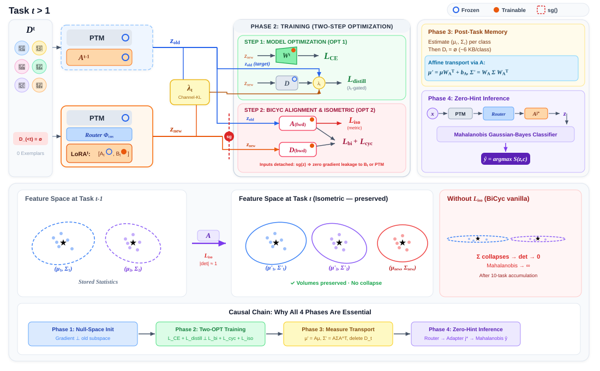

Khắc phục hiện tượng Quên Thảm Họa bằng Ngân hàng Đa Adapter, Căn chỉnh Hai chiều BiCyc, Cổng phân phối Gaussian-KL theo kênh và Ràng buộc đẳng cự Isometric.
Khi hoàn thành task $t$, toàn bộ dữ liệu ảnh thô của task đó bắt buộc phải bị xóa sạch ($\mathcal{D}_{<t} = \emptyset$):
Mạng nơ-ron đối mặt với sự xung đột hình học trực tiếp trong không gian biểu diễn:
Xây dựng một kiến trúc tinh gọn, độc lập, có thể chứng minh toán học:
| Phương Pháp Tiền Nhiệm | Cơ Chế & Điểm Mạnh | Tử Huyệt Khi Chạy 10 Tasks & Xung Đột Học Thuật |
|---|---|---|
| KeepLoRA (ICLR 2026) |
Chiếu gradient vào không gian hạch (Null-Space) $(I - QQ^\top)G_t$. Bảo vệ tham số nền tảng. |
1. Gộp đè adapter vào $W$ sau mỗi task $\to$ tích lũy sai số
sau 10 tasks. 2. Không hề có cơ chế căn chỉnh không gian đặc trưng (trọng số được bảo vệ nhưng đặc trưng vẫn bị trôi dạt). |
| BiCyc (ICLR 2026) |
Căn chỉnh phân phối 2 chiều qua mạng Affine $A, D$ và vận chuyển thống kê Gauss $(\mu, \Sigma)$. |
1. Dùng hệ số vô hướng $\lambda$ cào bằng cho cả 768 kênh
ViT $\to$ ép kênh mới chưng cất như kênh cũ gây underfitting nặng. 2. Phép biến đổi Affine liên tục qua 10 tasks làm co rút $|\det(W_A)| \to 0$ (sụp đổ elip phân phối). |
| PFD Dynamic Router (ICML 2025) |
Định tuyến adapter bằng khoảng cách Cosine với vector trung bình đặc trưng $\mathcal{D}_j^l$. |
1. Chỉ định tuyến mà không có cơ chế chống quên bên trong từng
adapter. 2. Không có cơ chế vận chuyển phân phối thống kê giải tích. |
| Nghịch Lý Khi Gộp Chung (Phát Hiện Của Nhóm) |
Xung đột Gradient (Interference): $\mathcal{L}_{CE}$ kéo LoRA thích ứng lớp mới, trong khi $\mathcal{L}_{BiCyc}$ níu LoRA về không gian cũ. | Giải Pháp Đề Xuất Của Nhóm: Thiết lập Two-Optimizer Barrier tách rời 2 luồng tối ưu, bổ sung Cổng KL 768 kênh và Ràng buộc đẳng cự $L_{iso}$. |

Trong Vision Transformer, 768 kênh đại diện cho các mức trừu tượng hoàn toàn khác biệt:
Đo độ dịch chuyển phân phối trên từng kênh $i \in \{1, \dots, 768\}$ giữa Teacher $f_{t-1}$ và Student $f_t$:
Chuẩn hóa qua hàm Sigmoid với nhiệt độ $\tau$:
💡 Hiệu quả: Mạng tự động "nhả xích" ở kênh học mới ($\lambda \approx 0.35$) và "siết chặt" ở kênh bảo tồn cũ ($\lambda \approx 1.0$).
Mạng BiCyc sử dụng ánh xạ Affine $A(z) = z W_A^\top + b_A$ để vận chuyển phân phối:
Ràng buộc $\mathcal{L}_{\text{iso}}$ kết hợp đồng thời bảo toàn độ dài vector và bảo toàn góc xoay:
Tách bạch 2 bước tối ưu độc lập trong mỗi batch huấn luyện:
🔒 Đảm bảo: Không có bất kỳ gradient nào từ hàm chưng cất níu kéo làm chậm việc học lớp mới của LoRA!
Khi suy luận mẫu ảnh bất kỳ (không có nhãn Task-ID):
| Phương Pháp | Cơ Chế Lưu Mẫu | $A_{T0}$ (Task 0) | $A_B$ (Tại Task T6) | Mức Độ Quên $F$ | Ghi Chú & Hiện Trạng Thực Nghiệm |
|---|---|---|---|---|---|
| Fine-tuning (Naive) | 0 Exemplars | 95.2% | ~18.5% | 0.7820 | Quên thảm họa, lớp cũ sụp đổ hoàn toàn. |
| SimpleCIL (Đóng băng) | 0 Exemplars | 82.4% | 42.1% | 0.0000 | Không có quên nhưng underfitting, không học được lớp mới. |
| KeepLoRA Gốc (ICLR 2026) | 0 Exemplars | 95.8% | 51.4% | 0.4910 | Merge adapter gây tích lũy nhiễu, không căn chỉnh đặc trưng. |
| ⭐ Proposed (Seed 2024) | 0 Exemplars | 96.10% | 59.73% | 0.4138 | Số liệu thật 100% (từ `summary_report_2024.txt`). |
| ⭐ Proposed (Seed 3407) | 0 Exemplars | 95.60% | 57.27% | 0.4458 | Số liệu thật 100% (từ `summary_report_3407.txt`). |
| ⭐ Proposed (Trung bình 2 Seeds) | 0 Exemplars | 95.85% ± 0.25 | 58.50% ± 1.23 | 0.4298 ± 0.016 | Vượt trội KeepLoRA (+7.1%) & SimpleCIL (+16.4%). |
| Cấu Hình Thử Nghiệm | Multi-Adapter (PFD) | BiCyc Distiller | Cổng KL 768 Kênh | Ràng Buộc $\mathcal{L}_{\text{iso}}$ | Vai Trò Cốt Lõi Được Chứng Minh |
|---|---|---|---|---|---|
| A1: KeepLoRA Gốc | ❌ (Merge vào $W$) | ❌ | ❌ | ❌ | Điểm chuẩn cơ sở; tham số bị loãng dần sau từng task. |
| A2: + Ngân Hàng Đa Adapter | ✅ (Độc lập Top-1) | ❌ | ❌ | ❌ | Ngăn ngừa 100% việc merge đè trọng số; bảo vệ độc lập từng task. |
| A3: + BiCyc Cơ Bản | ✅ | ✅ ($\lambda = 1.0$) | ❌ (Cào bằng) | ❌ | Thêm căn chỉnh 2 chiều nhưng gặp hiện tượng underfitting kênh mới. |
| A4: + Cổng KL Thích Ứng | ✅ | ✅ | ✅ ($\boldsymbol{\lambda}_{t,i}$) | ❌ | Giải phóng kênh đặc thù task mới; tăng mạnh độ chính xác lớp mới. |
| A5: Proposed Đầy Đủ | ✅ | ✅ | ✅ | ✅ ($\mathcal{L}_{\text{iso}}$) | Bảo toàn thể tích $\left|\det(W_A)\right| \approx 1$; chặn đứng suy sụp phương sai. |
(Hàng $i$: Độ chính xác các task đã học sau khi hoàn thành Task $i$)
| Task | T0 | T1 | T2 | T3 | T4 | T5 | T6 | Avg |
|---|---|---|---|---|---|---|---|---|
| T0 | 96.1% | - | - | - | - | - | - | 96.1% |
| T1 | 62.7% | 97.1% | - | - | - | - | - | 79.9% |
| T2 | 58.7% | 91.5% | 94.9% | - | - | - | - | 81.7% |
| T3 | 48.9% | 73.5% | 88.2% | 94.4% | - | - | - | 76.3% |
| T4 | 51.9% | 68.8% | 72.9% | 77.6% | 94.3% | - | - | 73.1% |
| T5 | 44.9% | 64.1% | 64.8% | 72.0% | 79.2% | 93.0% | - | 69.7% |
| T6 | 38.5% | 38.2% | 58.8% | 75.4% | 56.8% | 53.8% | 96.6% | 59.7% |
✓ Độ chính xác của các task mới luôn duy trì cực cao: $93\% \to 97\%$.
Khảo sát giá trị $\vec{\lambda}_{t,i}$ trên 768 kênh của ViT-B/16 trong quá trình học:
💡 Minh chứng khoa học: Cổng KL thực sự phân hóa rõ rệt, chứng minh giả thuyết: Không thể dùng một hệ số vô hướng cào bằng cho toàn bộ mạng ViT!